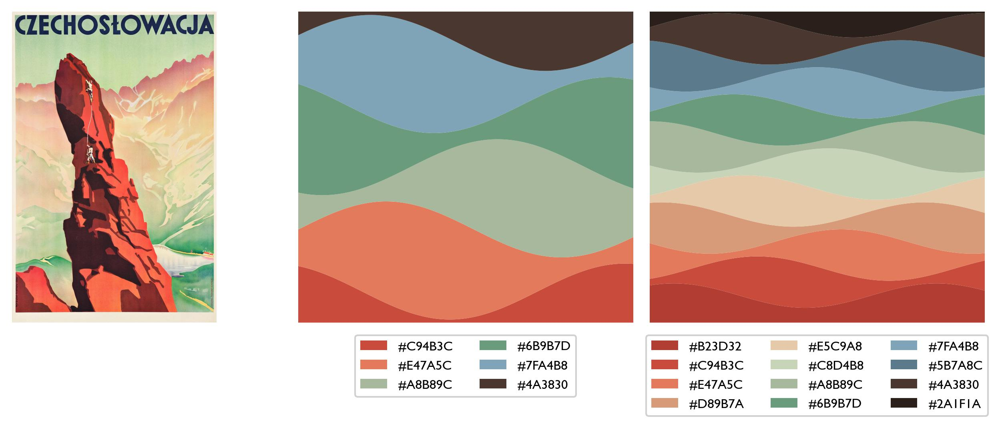

2025-10 | I don't care if you're going nowhere, just take good care of the world
link
Settling into cold sun and frigid rain. This month I went back to Montréal, which was just a triumph of
low light on autumn leaves, longitudinal conversations, homemade pasta better than anything I’ve ever tried to cook.
Peak Québec things: the experimental apple orchard with F and R, the Hochelaga grain elevator, solitary poutine
in the park, a long walk across the mountain, Leonard Cohen’s favourite diner, baby’s (and my, and A’s)
first Orange Julep. Driving with C across the Décarie listening to her ancient Depeche Mode CD: I don't
care if you're going nowhere, just take good care of the world.
(I seem to always be moving, and I’m jealous often of friends who stay in the same place for a long time, deepening the
context of their relationships. Seeing people I’ve known & cared for for decades felt resonant, and sense-making.)
All trips to Montréal involve a visit to Librarie Drawn & Quarterly, of course, where I exercised restraint and
only bought more books for the child, as opposed to myself. We have been getting deep into the minimalist poetics of
Jon Klassen, & I suspect we are joined in that by most of Canada - walking across Mont Royal I passed an
elegant-and-somewhat-harried mother chanting J’AIME MON CHAPEAU at her toddler.
____________________
I am still officially unemployed {on parental leave} but I am trying to engage with science-world a bit. Because I
formally don’t have deadlines right now, I’ve been trying approach it from the angle: what would this look like if it were
an unhurried hobby? To make space to play lightly as much as possible — a space where some good things can come from, but
which can be hard to access. This mostly looks like trying read further afield than usual, getting distracted by
sidequests like “can I get cdo to run from within a jupyter notebook in a specific environment on the cluster”
(so far, no) and trying to ask weird questions of old model output. I enjoyed John Kennedy’s series Open Ocean,
where he talks through an example writing a gridder for sea surface temperature data. It’s always cool to see
someone else’s process (especially if that someone is far more experienced and skilled at this kind of thing than me.)
As one of the sidequests, I made this series of colourmaps out of old Czechoslovak Railway posters.
(H/t M, who made some from Czech art a while back.)

____________________
An ongoing theme in this household is “my spouse listens to podcasts with Ezra Klein & then complains to me about
Ezra Klein”. This one, with Brian Eno, was maybe an exception. I don’t know how interested I am in infinite meditations
about ‘what is art’, but I’m interested in Brian Eno’s ones. A bit of the conversation was about AI, and I liked his
balance of interest in a new tool and healthy skepticism towards the socio-political context of the tech world in which it’s
being developed. (Of course, if you ask the venture capitalists, anyone who is skeptical of tech these days is a defeatist
loser with a ‘death drive’, but I disagree.) Also, Brian Eno heartily recommends everything the London Review of Books do.
Between his endorsement and J's, I guess I’ll get a subscription, finally.
____________________
Giorgia Lupi continues to be one of my guiding lights as far as information design goes. I loved this love
letter to the New York subway.
____________________
I didn’t make it through the latest Taylor Swift album, but I liked this TikTok about it, which reminded me of
this perennial banger from Susan Sontag:
Women have another option. They can aspire to be wise, not merely nice; to be competent, not merely helpful;
to be strong, not merely graceful; to be ambitious for themselves, not merely for themselves in relation to men
and children. They can let themselves age naturally and without embarrassment, actively protesting and
disobeying the conventions that stem from this society's double standard about aging. Instead of being girls,
girls as long as possible, who then age humiliatingly into middle-aged women and then obscenely into old women,
they can become women much earlier and remain active adults, enjoying the long, erotic career of which
women are capable, for longer. Women should allow their faces to show the lives they have lived.
Women should tell the truth.
Something something second wave feminism, of course, and this sort of thing can quickly devolve into girlboss
territory, but it needn’t, and as a strategy for side-stepping (as far as possible) number of otherwise potentially
energy-draining preoccupations, it’s a good one.
____________________
I’m reading Philip Pullman’s new novel The Rose Field, which it turns out I’ve been waiting for since I was 12
and was assigned The Golden Compass in middle school. Maybe part of the draw is having been visiting this
world for forever, but there’s a lot of us — the previous book, The Secret Commonwealth, was passed around
something like seven of my friends in physical copy, which itself felt special. I liked this interview with
Pullman. Here’s an excerpt about depression:
What keeps you coming back to this — to imagining all of these ways that you can be estranged from yourself?
Well, it’s something that I have felt: depression, or melancholia as they used to call it in the Middle Ages.
But it’s a true thing about human beings — that we do feel this sense of estrangement from being alive and
being in the world. So that’s why I inflicted it on poor Lyra.
When it’s happened to you, how did you deal with it?
There are times when you just have to lie down and close your eyes and get to sleep.
If you’ve got a little bit of energy you can get up, you can go to your desk, you
can pick up your pen, and you can go from there.
One thing you learn about when you’re in that condition is that the opposite of
depression is not happiness but energy. It’s energy you’re lacking. If anything can connect
you with the world as you used to know it when you were young — the world as it is now,
if only you could see it as the secret commonwealth sees it — anything that can make you feel
alive again is worth knowing, worth passing on.